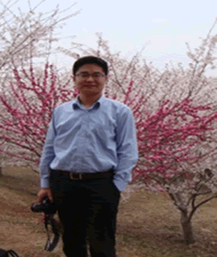

 |
| 人生格言：一信字是立身之本，所以人不可无也。一恕字是接物之要，所以终身可行也。 |
| |
他带着对事业梦想的追求与执着毅然离开自己刚刚购买的新居来到百年，同昔日的伙伴共同创业。
从入司开始，他就充分思考积极地在部门的建章建制方面献智献策。在部门的日常工作中积极地推进和完善部门及自己的工作，不辞辛苦地主动担当，并且将自己积累及新获得的知识，毫无保留地与同事共享。主动传承自己的知识、智慧及经验。
此外，他还主动承担起薪酬项目及绩效考核管理项目的推进工作，不厌其烦地与咨询管理公司及公司各部门领导沟通各项细节，并在薪酬项目及绩效考核管理项目中提出了很多富有建设性的意见。
他的勇于不断改变和完善自己的精神影响和鼓励着他身边的每一个同事，感染着大家去共同学习和进步。 |
|
|